|
惡靈古堡GC復刻板----地圖攻略Jill篇
|
|
攻略以Normal模式為主，重要道具標綠色，請一定要取得，如攻略有誤，或是有疑問，請至留言版。
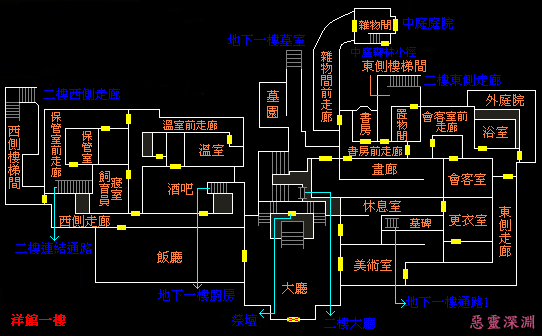 聽到槍聲後，Jill和Barry被派去探查，在飯廳發現一灘血後，直接到西側走廊，會看到一隻僵屍正在啃食Kenneth， 轉身跑走即可。回到飯廳Barry幫忙解決掉這隻僵屍，正要回大廳時這隻僵屍竟然跑了。回到大廳發現Wesker不見 了，上二樓大廳繞一圈下來，Barry會給Jill開鎖工具，兩人決定分開行動。回到飯廳。 飯廳桌上有色帶，旁邊有打字機可紀錄，接著到西側走廊，調查Kenneth的屍體，得到Kenneth的錄影帶，現在沒有 設備，還無法觀看。往西側樓梯間。 在往二樓的樓梯前有個像鳥籠的東西，在它前方有手槍子彈，樓梯下有兩株綠色藥草。
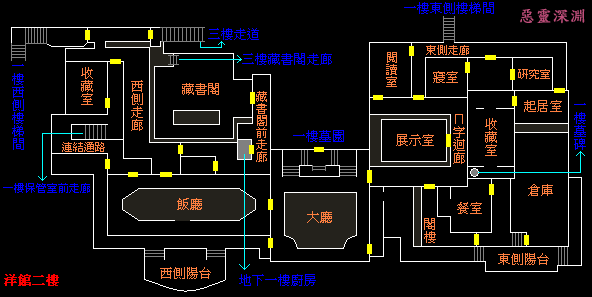 二樓的西側走廊上目前有兩隻會活動的僵屍和綠色藥草，通過一排的箭矛後找到黃金之矢（遊戲指南--詳細調查 道具），調查之後得到箭頭，旁邊鏡子前有手槍子彈 ，擊退一隻僵屍後打開通往飯廳的門，門邊有護身小刀（遊 戲指南--關於緊急迴避）可拿，將對面的石像從沒有護欄的地方推下去就可離開。 由大廳通往一樓墓園。 墓園有散彈，但是要小心僵屍。在墓前使用箭頭，打開通往地下一樓墓室的通路。
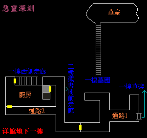 墓室裡的氣氛很詭異，在石棺下找到詛咒之書，調查書的背面，得到劍之鑰匙。 回到一樓大廳往美術室，這裡有一個可移動的櫃子，推到石像旁邊拿取洋館地圖。如果之前破過關拿到更衣室鑰 匙的從這裡進入更衣室。美術室更深處有一把護身小刀，但是拿了會有僵屍從後面襲來。 東側走廊上的第二個和最後一個櫃子可以推動，下面分別有護身小刀和手槍子彈。 於會議室前走廊打開通往外庭院的門，外庭院有幾隻僵屍犬，底部有植物用的藥品、燈油桶、綠色紅色藥草。 進入浴室，調查浴缸放掉裡面的水，會有一隻僵屍跑出來被Jill踩爆，浴缸裡有護身小刀。 進入會客室，裡面有護身小刀、色帶，牆上掛著一把散彈槍，要離開時天花板竟然往下壓來，趕緊調查兩邊的門 ，Barry就會及時出現救出Jill。往書房前走廊。 書房前走廊通往東側樓梯間的門因為已經快要壞掉的緣故，從「樓梯間往走廊方向」只能通行兩次，兩次過後就 會變成只能由走廊往樓梯間的單向門，要特別注意。進入樓梯下的置物間。 置物間有攜帶用燃料瓶、燈油桶、有關屍體處理的注意事項，在這份File中得知 ，僵屍被擊倒後會復活，除非把 他們的頭打爆，或是將他們燒掉，燒掉需要的道具有攜帶用燃料瓶、燈油、打火機，在各處的燈油桶都各有四份 燈油可以使用，如果被擊倒的僵屍復活的話，行動力不但大幅上漲，攻擊力和攻擊方式也會改變。 從樓梯間到二樓東側走廊，由手邊往閱讀室的門是由裡往外的單向門，在走廊這無法進入。 一進ㄇ字迴廊旁邊的桌上擺著一本木頭做的紙，進入閱讀室。閱讀室裡有手槍子彈、犬笛（被丟掉的筆記） 、打 火機、植物學。回東側走廊到起居室的壁爐前使用打火機後再使用木頭做的紙，就可得到洋館二樓地圖。 犬笛到手後直接前往二樓飯廳，經過二樓大廳時剛好遇到Barry，會給Jill硫酸彈。打開通往連結通路的門，進入第 一扇門到西側陽台，在陽台上使用犬笛，會有兩隻僵屍犬跑出來，其中一隻會掉落頸上的項圈，調查後得到項圈 內的贗品，再次調查得到鑰匙的仿製品 。陽台這裡還有綠色藥草盆可以使用三次。 因為仿製品無法直接使用，所以必須去換真品回來，經過連結通路打開往西側走廊的門，之前西側走廊上仆地的 僵屍會在玩家拿仿製品回來的時候復活，走廊上空間狹小，不想打的話快速跑過即可。
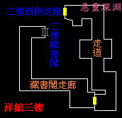 三樓走道中間有一個凸起的平台，上面放著鎧之鑰匙，沒想到卻觸動了死亡機關，這時將鑰匙的仿製品代替放入 ，機關解除。
拿到這把鑰匙，可以打開的門可多了，帶上之前拿到的植物用藥品，先進入保管室隔壁的小房間，裡面有電擊器 電池、色帶、燈油桶、壞掉的散彈槍 ，因為之前已經把散彈槍拿到手了，所以這支壞掉的不用拿。 穿越溫室前走廊（門前桌上有電擊器電池） 進入溫室，溫室裡面有活躍的植物藤蔓，在門邊有幫浦，將植物用藥 品放入幫浦中，打開開關時要注意，有兩種顏色選擇，一個是中央藤蔓佔據的噴水池的，一個是旁邊綠色藥草 的，仔細檢查過管子的流向再打開。藤蔓失去活動力後在後方拿取無眼面具。 回走廊上進入飼育員寢室，床上有手槍子彈，地上躺著一隻僵屍，桌上有飼育員的日誌，打開桌子後方的衣櫃， 裡頭有一隻僵屍和電擊器電池，地上的僵屍復活，還好不是狂暴化的僵屍。 至於飼育員寢室斜對面的小小房間，可以帶著之前在餐廳二樓推下一樓的石像手上的藍寶石，將寶石嵌入石老虎 的眼睛，得到散彈。 經過西側走廊時，可以先把往地下一樓廚房和酒吧的門打開，這樣才能早點把鑰匙丟掉。
從一樓大廳到二樓，打開東側陽台，看到Bravo小隊的Forest的屍體，他的對面有護身小刀，身邊有榴彈槍，走道 底部有兩株綠色藥草，但是Forest會爆走，不想面對昔日戰友的人拿到小刀和榴彈槍即可回頭。 到二樓的ㄇ字迴廊，進入展示室，有四個騎士自動移了出來，嘗試把四個騎士都推回原位，成功後按下房間中央 的按鈕，在後方拿取寶石箱， 寶石箱上方寫著當太陽的光輝再現時，所以注意太陽圖形上的兩塊不規則形狀，調 查寶石箱各面的按鈕，按下和這兩塊相同的按鈕，打開後得到裡面的無眼鼻口面具。 分歧──回到走廊開啟閣樓的門，發現Richard被大蛇攻擊，中了毒， 需要去拿血清來救他，這一個分歧關係 到是否可拿到另外一把散彈槍以及後面的劇情，血清的位置就在一樓西側的保管室藥櫃上，最近的路 應該是從二樓過去。拿血清回來的時間很重要，如果Richard沒死的話，會拿到Richard給的通信機。 相反地，若是來不及回來，會看到Richard的屍體。 Richard事件結束後，可以好好調查了，在Richard附近有兩株綠色藥草。往內到餐室，用打火機點燃桌上的燭臺， 發現桌上和櫃子裡都有彈藥可拿，推開一旁可疑的廚櫃，裡面的有一隻僵屍和樂譜的中間部分。 目前一樓西側還剩下酒吧沒有調查，去的時候順便把飯廳壁爐上方的盾型紋章帶走，在酒吧最角落有可移動的櫃 子，櫃子後面是另一份月光的部分樂譜，將兩份樂譜組合得到月光的樂譜，到鋼琴前使用，彈完後酒吧出現一個 密室，裡面有Trevor的筆記、黃金紋章，放上替代的盾型紋章即可離開。 把黃金紋章拿到飯廳置入壁爐上方，大鐘突然打開了，看來又有機關要解，提示就在大鐘旁的那幅畫，畫中兩個 人持著長劍和短劍，分別刺穿對方的頭盔和鎧甲，依照提示調整了大鐘的長針短針，得到盾之鑰匙。 使用盾之鑰匙的門只有一扇，就是二樓閣樓最裡面往倉庫的門，這裡有大蛇鎮守。 分歧──如果之前成功把Richard救活，Richard就會出現， 為了救Jill而被大蛇吞掉，留下一把改良式散彈槍，接 下來就看玩家要不要打大蛇，沒有把握的人可以拿了無鼻面具就離開。 （如果不幫忙Richard，而直接 拿面具離開的話，Richard會被吞掉而且不會留下散彈槍） 而若是玩家在戰鬥中中毒，在Richard被大蛇吞到的情況下，Jill必須自行去取血清；若Richard之前就死 了，Barry就會出現把Jill帶到一樓西側保管室醫治並恢復體力。 打開二樓研究室外面的門，有紅色藥草可拿。寢室裡有急救箱、色帶。使用開鎖工具打開研究室，碰到Barry正在 研究file某研究員的遺書，拿取牆上掛著三個展示箱的釣勾、蜜蜂的假餌、蜜蜂的標本，看來假餌和標本的位置是 擺相反了，將釣勾和假餌組合，放到標本原本的位置，把標本放到假餌的位置，打開下方按鈕，取得風之飾章。
在一樓置物間門前發現一張Barry留的字條，Barry在置物間留了燒夷彈、急救噴霧給Jill。 帶上目前拿到的三個面具、鎧之鑰匙，武器方面一把散彈槍就夠了，前往一樓的畫廊。畫廊最底部是一個女子的 畫像，畫中她穿戴著綠色的頭飾、紫色的首飾、紅色的手環，而這裡其他的畫下方都有照明燈的開關，找出含有 這三樣東西的畫，打開底下的照明燈（顏色以打開照明燈時的顏色為準），然後去按下底部畫作的按鈕，暗門就 開啟了，外面有無口面具。打開往墓園的門，在地下一樓的墓室中使用四個面具，石棺掉下來了，調查後必須和 爆走僵屍對決，強制必須要勝利不能逃走，石棺旁邊有散彈，石棺內有打開門的按鈕以及鐵和石製的物體。 回到洋館一樓的畫廊前走廊，進入雜物間前走廊，在雜物間門前使用鐵和石製的物體就可打開門。雜物間裡有散 彈、電擊器、急救噴霧。先前往中庭森林小徑。
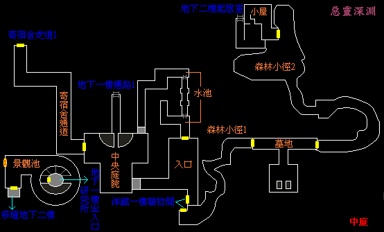 如果之前成功拿血清救活Richard，在森林小徑1就會接到Barry的無線電通訊。小徑上有兩個一藍一紅的風向雞， 似乎是控制往墓地的門前兩隻地獄番犬，讓牠們互相背對即可開啟門。 快速通過墓地往森林小徑2。小徑2上沒有特別的東西，進入小屋。階梯上有中庭地圖，打字機附近有某個家庭的 照片，到最底部拿到四角曲柄，在置物箱整理裝備，除了四角曲柄外，還要帶上風之飾章。正當想要離開時，竟 然出現一個恐怖的怪物把Jill打昏了，醒來時這個怪物就近在眼前，她就是實驗體Lisa，而且是無敵的，醒來後趕 緊繞過她跑吧。 跑回墓地時停一下腳步，把風之飾章嵌入其中一個墓碑，就可得到日之飾章、月之飾章、星之飾章，調查三個飾 章的背面，然後放入隔壁的墓碑，得到.357麥林手槍。 回到洋館一樓的雜物間，改進入中庭入口，接到Brad的通信，解決幾隻僵屍犬，還有藍色綠色藥草。在水池的地 方使用四角曲柄打開水閘，就可以通過，搭乘盡頭的升降梯到中央庭院，並直接到寄宿舍通道。 通道口有紅色藥草，進入寄宿舍。
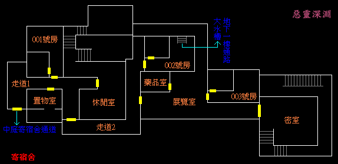 走道1上有三株藍色藥草，目前可以進入的地方除了置物室、休閒室還有走道2，置物室裡有色帶、電擊器電池和 燈油桶。 休閒室共分為三層，一進入即是中間這一層，有兩株綠色藥草，在角落發現一個奇怪的燈，用打火機點燃後出現 一個奇怪的圖形；下層有紅色之書、急救箱、散彈，這裡也有一個奇怪的燈；上層有最後一個燈，還有撞球桌， 調查發現剛剛點燃的三個燈的顏色在這裡都有，對應這三個顏色有三個號碼。 往走道2的門口有兩個破洞，想走過去卻被藤蔓攻擊，這時發現走道1上有一個木箱，但是洞有兩個怎麼辦？將木 箱推到左邊的破洞上，攀爬通過；回來的時候再把木箱往前推一格（推到另一個洞旁邊），可以安全通過而且木 箱不會回到原位。 走道2底部有地圖可以拿，拿了之後牆上出現了一個洞，可別好奇而去調查這個洞。正要進入002號房之時，聽到 房內似乎有什麼人在講話，進去後發現是Barry。002號房的浴室架上找到001號房的鑰匙，房間內有植物42號的筆 記，往回打開001號房。 001號房浴室在浴缸中有一支制御室的鑰匙，房間內則有護身用手槍、某自殺者的遺書、手槍子彈。 制御室在哪裡呢？再一次來到002號房，推開兩個擋路的書櫃，出現一個往下的梯子，到大水槽地下一樓通路。
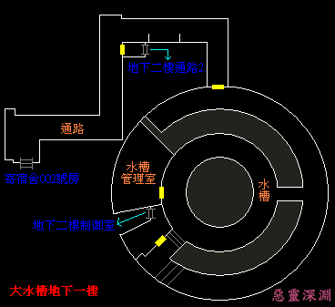 通路走到一半突然被一漥水擋住了，把三個木箱推入水中，形成一個通路，轉角處有綠色藥草，接著進入水槽。 水槽這裡幾乎已經被水淹沒，到處都有鯊魚四處亂竄，在水中戰鬥非常不利，還是趕緊離開水面，使用制御室鑰 匙到地下二樓制御室。
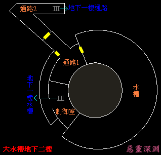 制御室裡有許多控制面板，控制閥前方有急救箱，內側牆上有大水槽地圖，地圖前面的桌子上有個資料顯示，油 壓調整裝置在危急時應該要打開第幾號，準備好後先打開排水裝置，但是鯊魚的撞擊讓制御室岌岌可危，為了安 全起見，先解除排水裝置右邊的制御裝置，然後打開扳下的耐壓面板放下防護牆，沒想到卻卡住了，趕緊去開啟 正確的油壓調整裝置，再次恢復制御裝置正常運作，這次扳下耐壓面板終於成功了，最後成功的排水即可。 通路1有散彈可拿，往水槽。水槽底部的平台上有個閃閃發亮的東西，正要拿的時候卻掉進水裡，這時如果貿然 下水會被大鯊魚咬碎，先在平台上把綠色的機台推下水，再打開一旁的開關，瞬間就把大鯊魚解決，這時就可以 下水去拿展覽室的鑰匙。 由於水都退了，已經不能循原路回去，只好經由通路2回到地下一樓，通路上有軍用手槍子彈別忘了。 回到寄宿舍要去的地方當然是展覽室了，展覽室裡有很多蜜蜂相當煩人，在轉角處有一個看起來痛苦死去的人， 他身上可以找到殺蟲劑，得到後先趕快跑出去。 記得走道2底部牆上的地圖後方的洞嗎？在洞前使用殺蟲劑把展覽室的蜜蜂全滅。這時回去展覽室可安靜多了， 中央桌上有手槍子彈、長廊底部有003號房的鑰匙、往密室的門前有紅色藥草。 003號房的浴室什麼也沒有，房間的書櫃上拿到白色之書（有機化學實驗檔案），放入之前在休閒室拿到的紅色 之書，並依照書側的圖案排列成完整的圖案，房間突然出現了一扇門，通往密室。 分歧──此處決定要不要去調和V-JOLT，影響後面劇情。 調和V-JOLT：來到藥品室門口，輸入之前在休閒室看到的三個對應圖形的號碼，藥品室裡有四個空 瓶，事實上只要三個就夠了，還有水、UMB No.3、Yellow-6，目的是要調合成V-JOLT，調和的辦法寫 在file有機化學實驗檔案和牆壁上，調和完成後拿到大水槽地下一樓水槽管理室對植物的根部使用。 進入密室時Barry會出現支援Jill。 直接進入密室：Jill必須自己和植物42戰鬥。 成功解除危機後，在密室的壁爐找到兜之鑰匙。離開前在走廊上遇到Wesker，他請Jill再回洋館調查一次，隊長的 命令可不能不聽，回洋館吧。
在雜物間有榴彈、急救噴霧、電擊器，牆上有一張留言，原來這些道具都是Barry留下來的。如果之前還沒拿到 Richard的通信機，在雜物間前走廊會撿到S.T.A.R.S.的通信機。 回到洋館後要小心到處都佈滿了獵人。先往洋館二樓。
起居室這裡通往收藏室的門終於可以打開，裡面有一尊可疑的雕像，而隔間裡一踏進去兩旁的牆壁就會閉合，將 雕像往隔間裡推，不用擔心被夾死，因為有雕像檔著，推到底後繞到其中一面移動牆的背後，底部有一個按鈕， 按下後牆又收縮回來了，不要遲疑趕快去把雕像推到中央和另一尊已經定位的雕像相對應的位置（只要在牆壁來 的時候推到洞的正前面即可），由打開的暗門裡拿到護身小刀，跳下洞裡到達一樓墓碑。 墓碑處有一本最後之書(上)，調查後發現裡面的大鷲徽章，在墓碑前有Trevor的手記，墓碑下有通路到地下一樓通 路1。
通路1的死巷底有地圖、散彈。通路2則有紅色藍色藥草、護身小刀，記住要打開底部的電源。 來到廚房，桌上有護身小刀，因為電源打開了，廚房的電梯也就可以搭乘，搭乘電梯到二樓藏書閣前走廊。 藏書閣前走廊除了僵屍之外，還有綠色和紅色藥草，通往藏書閣的路無法打開，這裡的小房間有蓄電池、散彈、 硫酸彈、電擊器電池。
接著打開往西側走廊的門，經過二樓西側走廊和三樓走道，到達藏書閣走廊，走廊上有兩株綠色藥草，再往前會 碰到大蛇，趕緊從爬梯下去，和牠保持適當距離輕鬆把牠解決，大蛇死前撞倒書櫃，赫然發現被撞倒的書堆中有 一本最後之書(下)，調查後得到狼之徽章。 二樓西側收藏室裡有保安部長的信、護身小刀、榴彈，門口有電燈開關，把燈關掉發現兩側的標本眼睛都會發亮 ，而另一面牆上有一隻會隨著玩家移動的老鷹機關，還有兩個可以推動的櫃子，先把櫃子推到兩側標本底下，注 意一旦老鷹機關和標本相對望，眼睛部份的寶石便會閃閃發光，這時就無法取下，試著引誘老鷹機關面向另一 側，接著從牠下方跑過。兩側的寶石有紅寶石、黃寶石，黃寶石可以拿到一樓飼育員寢室對面小房間的老虎石像 使用，得到MO磁片。 到大廳一樓右側的休息室，裡面有Trevor的手記、小桌抽屜有色帶，再往內的房間有藍色藥草盆、護身小刀、綠 色藥草、寶石箱。把紅寶石和寶石箱組合，並將掉落的碎片拼湊完成，即可得到紋章鑰匙。 紋章鑰匙是拿來打開一樓東側書房的，打開書桌上的檯燈，把這裡的鐵製的物品、散彈、 電擊器電池帶走。 帶著蓄電池回到中庭。 首先先來到中央庭院把蓄電池裝上，並搭乘通電完成的升降梯回到入口，再由入口到水池，使用四角曲軸把水池 的水引回來，回頭搭乘升降梯到中央庭院，發現中央庭院的流水停止了，出現了一條通路。
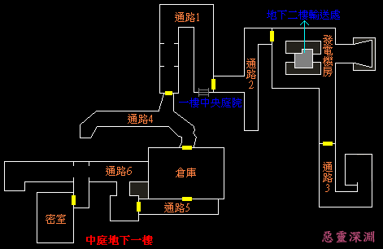 下來到陰暗潮濕的通路1，有打字機、色帶、置物箱可以使用，經由通路2直接到發電機房。 發電機房有兩副手槍子彈，發電機看來目前是無法運作，進入通路3。通路3遇到Enrico，最後不幸被S.T.A.R.S.的 背叛者一槍斃命，在他身上可以找到六角曲軸，回程路上小心獵人。 往回到通路1，整理裝備，在路中被阻斷的 地方牆上有個圓孔，使用六角曲軸通過，路底部有綠色藥草。 通路4這裡還有一顆可疑的大石頭，調查調查，沒想到大石頭竟往這裡滾過來了，躲過後出現了新通路，原本大 石頭所在處的後方有散彈。 一進倉庫就被一隻超級大蜘蛛盯上了，可惜他速度太慢了，只要一直跑到他後面攻擊就可輕鬆勝利，附近找到一 把野戰刀，是用來清除門上的蜘蛛絲。 通路5進入後的右手邊有兩株藍色藥草和中庭地下一樓地圖。 通路6同樣有需要六角曲軸來通過進入密室的大洞，閃過大石頭後可在後方發現急救箱。 密室裡有許多詭異的機關，一尊可推動的石像、中央會旋轉的地板、左側牆上不同顏色的部分、右側牆上的圓孔 ，圓孔勢必是要使用六角曲軸了，最終目的就是要將石像正面向外推進預定的位置，首先要利用凸起的牆，然後 用中央地板旋轉方向，成功後在兩尊石像中間找到圓柱體蓋。 現在要往回到發電機房，在發電機的地方找到圓柱體，和圓柱體蓋組合成雙重圓柱體，調查在雙重圓柱體上的羅 馬數字，重新把雙重圓柱體放入發電機，輸入剛才看到的由左到右四位數，成功後恢復發電，往地下二樓的升降 梯也升起了，剛好Barry出現，一起搭乘升降梯下去。
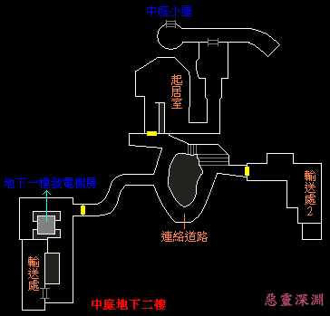 地下二樓輸送處有打字機、置物箱，連絡道路上遇到死對頭怪物Lisa，還好這裡地形很適合追逐，除了綠色紅色 藥草外，沒東西可拿，進入輸送處2。 輸送處2一堆箱子上方有電擊器電池、手槍子彈、軍用手槍子彈，輸送機前方有推動的箱子，把箱子推到輸送機 上面，按下開關進行輸送，箱子就被送到輸送處了。 回到輸送處，沒想到Barry竟然自己搭乘升降梯跑了，把箱子推到底部的壓碎機，啟動壓碎機，在碎掉的箱子裡找 到壞掉的火炎放射器。 再次來到連絡道路，牆上有一個可疑的把手，拉下後發現起居室門口伸出了掛勾，在掛勾上放上壞掉的火炎放射 器，門鎖解除，如果來不及就重來一次。 起居室沒有特別的東西，穿越淹水的一段路後來到充滿溫暖光線的房間，似乎是Lisa的房間吧，桌上找到寶石箱 ，打開裡面有石製的環、某個家庭的照片， 石製的環和之前在洋館拿到的鐵製的物品組合成鐵和石製的物品，爬 上爬梯到起居室的上層，右側有藍色綠色藥草，左側的梯子則通往中庭小屋。
回到洋館一樓雜物間前走廊，把鐵和石製的物品取走，雖然這樣往雜物間的門又鎖住了，但是以後也沒必要回去 中庭。 如今拿到兩個鐵和石製的物品，要在一樓大廳的樓梯後方門上使用，門打開通往祭壇地下一樓階段通路。
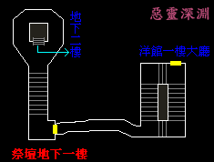 階段通路上有打字機和置物箱，從置物箱裡拿出大鷲徽章和狼之徽章，繼續順著路到地下二樓。
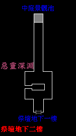 地下二樓遇到之前自己落跑的Barry， 想要對Jill不利，還好Jill身手靈巧把槍奪下，偏偏Lisa在這時出現，這裡的分 歧關係到結局，請多考慮。 分歧──把槍還給Barry：Barry會和Jill一起並肩作戰，但是如果在之後的過程中，Barry被Lisa擊落深淵的話，等 同Barry死亡。 不把槍還給Barry：Barry會直接被Lisa擊落深淵死亡，留下Barry的.44麥林手槍和Barry的照片。 把周圍四個與鐵鍊相連的石頭推下深淵，Lisa就會跟著跳下去了，在這個場景無法將Lisa打到倒地，但是可以利用 攻擊把她打入深淵。棺材裡面可以找到某個家庭的照片。 搭升降梯到中庭景觀池。 景觀池有兩處圓形的凹槽，把狼和大鷲徽章放入，景觀池水退了，出現秘密通道通往研究所地下一樓。
往地下二樓出入口。
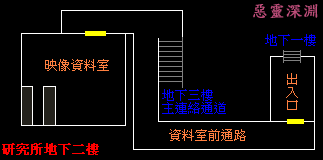 出入口有色帶可拿，建議把攜帶用燃料瓶拿出來。資料室前通路有燈油桶，兩株綠色藥草，映像資料室門口有 MO磁片，先帶上。到地下三樓主連絡通道。
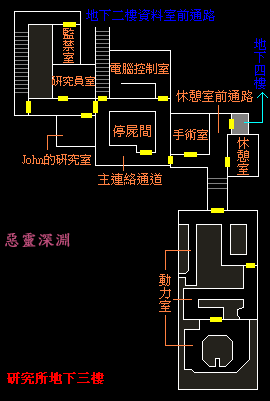 主連絡通道上護身小刀。在John的研究室前有急救箱，進入John的研究室。 研究室裡找到兩張分屬不同人的X光片，將X光片掛上燈箱與其他兩張並列，去打開房間的電燈開關，發現四張 X光片分別有不同的部位發亮（沒有的話就是放錯位置了），對照旁邊的器官圖，這些發亮器官的第一個字拼奏 在一起，得到一組四個字的密碼。另一旁的電腦前有某研究員的信。 回主連絡通道進入電腦控制室，門口有軍用手槍彈。電腦前有關於V-ACT，啟動電腦，帳號密碼就在file "某研究 員的信" 裡面，打開B2映像資料室的密碼是剛才在John的研究室取得的四字密碼，打開B3研究員室不需密碼，電 腦控制室內部掛著許多冰凍的屍體，雖然恐怖但不要畏懼，旁邊的櫃子有急救箱、電擊器電池這樣的好東西。 打開了兩扇門，就先從比較近的研究員室調查起，研究員室裡的一隻僵屍最好燒掉，這裡可取得色帶、幻燈片、 傳真，桌上有一台密碼輸出裝置，使用MO磁片解開三重鎖之門的第一個鎖（這是為救Chris而鋪路， 如果 沒打算要救Chris，可略過，MO磁片也不用拿）。 到二樓的映像資料室，進門桌上有急救噴霧，左手邊有MO磁片，打開投影機一看，都是些Umbrella的研究報告， 但最後一張有號碼的條碼令人在意，使用幻燈片再看一次，發現條碼下的四位數密碼，到門邊牆上輸入密碼，開 啟密門，密門前有散彈，裡面有動力室的鑰匙，這裡還有映像編集機器，終於可以把在洋館拿到的Kenneth的錄 影帶拿出來看。 動力室的鑰匙用來打開停屍間、休憩室前通路的門就可以丟棄了。 （不救Chris可略過）進入停屍間，正前方的鐵架推到底可拿到散彈，右邊的兩個通風口都可以通到手術室，再經 由手術室的另一個通風口回到停屍間的另外一側，那裡有電擊器電池，密碼輸出裝置，使用MO磁片解開三重鎖 之門的第二個鎖。將鐵架推到底離開。 休憩室前通路的僵屍不用將他們燒掉，倒地的他們會自動消失。休憩室裡有急救噴霧、色帶、榴彈。 動力室第一層有一台放置燃料的機器，調查後得到燃料供給用膠囊，這個膠囊一旦受到衝擊就會爆炸（例如被撲 倒）。將膠囊拿到研究員室補充化學燃料，再拿回動力室安裝回去，回程的時候要特別注意，因為膠囊裡面有易 爆炸的化學燃料，所以只能用“走的＂。 完成後進入動力室第二層，這裡有最後一台密碼輸出裝置，使用MO磁片後終於把三重鎖之門打開了，轉角處有 電擊器。 動力室第三層開啟動力開關，研究所的供電就恢復正常了。 回休憩室前通路搭乘往地下四樓的電梯，如果之前Barry沒有死，那就會在這裡跟她會合。 往地下四樓。
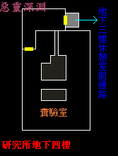 電梯前面有散彈可拿，進入實驗室。好不容易找到隊長Wesker，沒想到Barry和Wesker竟然是一伙的， 害Jill不但被 兩人輪番用槍威脅，還被Wesker打，幸好Barry良心發現出現搭救，Wesker放出Tyrant，由於他的移動很慢，使用打 帶跑戰術將他KO，拿走Wesker身上的觀察記錄書，如果Barry在之前就死了的話，就要記得拿Wesker身旁的一支主 鎖鑰匙。 別忘了打開底部的電子口開關，Barry在附近的話要叫醒他。在Barry活著的情況下，Ｗesker會啟動引爆 裝置。 接下來就是脫出，之前成功使用三張MO磁片的玩家，別忘了到地下三樓監禁室把Chris救出來，監禁室裡有散彈 可拿。
往回到地下一樓，經過出入口時整理裝備；因為電子口已經解除，所以通往直昇機坪的門也打開了（Barry不在則 是以主鎖鑰匙開門），直昇機搭乘用通路上有急救箱、散彈，不要把東西都拿滿了，通路底部有重要的保險絲組 件，拿到升降梯前牆上使用，搭乘升降梯到直昇機坪，如果Barry有救出來的話，時間就會開始倒數三分鐘。
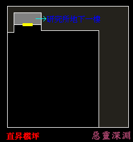 在升降梯前方有信號彈，到手了就趕快使用，若是Barry沒救出來，到此遊戲就結束了。 反之，則必須要和Tyrant進行最後一場決鬥，由於戰鬥的場地很大，Tyrant會使用衝刺來攻擊，記得Tyrant一準備轉 身衝過來時，不要轉身逃跑，因為根本跑不過牠，要往他沒有爪子的右手跑去來躲避攻擊，反覆幾次，給予一定 的傷害之後，架使直昇機的Brad會丟火箭砲下來，使用火箭砲把Tyrant轟爛吧！ （未經許可禁止轉載連結） |
惡靈深淵Biohazard Abyss http://98.to/coolbio